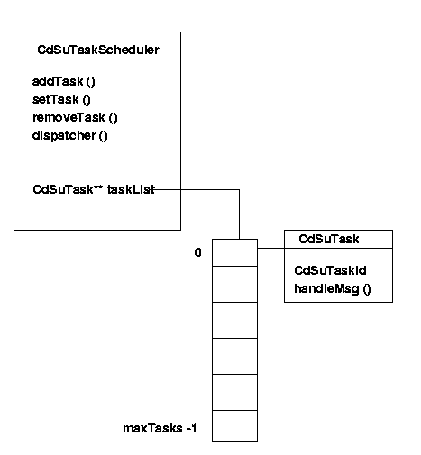

| Document id | : | ITS-MDD-CDSU_TASKSCHEDULER-001 |
| Document name | : | Task Scheduler Module Design Document |
| Author(s) | : | Seema Chandak |
| Contributor(s) | : | |
| Approved By | : | Prakash R |
| Document Source | : | Internet Telephony Group, C-DOT, Bangalore |
| Copyright © 2003 by C-DOT. All rights reserved. Contents of publication may not be reproduced in any form without permission from C-DOT. |
| Document History | ||||
|---|---|---|---|---|
| Version No | Revised By | Revised On | Approved By | Remarks |
| Draft 1 | Seema Chandak | Jun 20, 2003 | Prakash R | |
| |
|
|
|
|
| |
|
|
|
|
| |
|
|
|
|
1.0 Introduction
1.1 Purpose and Scope
1.2 Acronyms, Abbreviations and Definitions
1.3 References
2.0 Module Description
2.1 Design goals and constraints
2.2 Properties
2.3 Responsibilities
2.4 Functionalities
3.0 Decomposition Description
3.1 Class diagram
3.2 Entity Interaction Diagram
3.2.1 Entities
3.2.2 Channels
4.0 Resource usage
5.0 Design Considerations
6.0 Issues
7.0 Processing/Algorithm/Pseudo code/STD/Statecharts
8.0 Data Structures Required
9.0 Messages Received by module
10.0 Messages Transmitted by module
11.0 Test cases
Appendix
This document gives the design of CdSuTaskScheduler. The TaskScheduler maintains a table of all the tasks which has registered to it. It continuously listens on a message queue and when it gets a message it dispatches the message to appropriate tasks. Thus all the tasks belong to one thread. They are always passive and become active only when a message is posted to them. The message received by the TaskScheduler is CdTaskMessage type which is publicly derived from CdMessage.
This document provides the design details CdSuTaskScheduler. This document gives design goals and constraints, properties, responsibilities and functionalities of the Task Scheduler. Section 3 gives the class diagram, its member functions and attributes. Later sections give the algorithms, data structures, etc.
| : |
| [algoc++] | : | Algorithms in C++, Sedgewick, 1998, Pearson Education, Inc. |
| [xkmap] | : | x-kernel Map Library Design Notes, Mosberger. |
None.
None.
The following are the methods/functions provided by the TaskScheduler.
This section provides the classes, entities, channels and messages.
The CdSuTaskScheduler has the following data structures.
The data structures are shown in the diagram below.

The memory usage of the each data structure is given below.
| Entity | Memory usage |
|---|---|
| CdSuTaskScheduler | 12 bytes |
| CdSuTask | 2 bytes |
The taskList is implemented as a simple array because generally the no of tasks registering to a Task Scheduler will not be very large. Search Mechanism in such a case will be fastest in case of array. If the user can estimate the approximate no of tasks that will register to the taskscheduler at the creation of task scheduler then the memory usage will also not be much.
| Method | Description |
|---|---|
| CdSuTask () | CdSuTask constructor. |
| void setTaskId (CdSuTaskId tid) | Assigns a taskId to the task. |
| CdSuTaskId getTaskId () | Allows to get the TaskId of a given Task. |
| virtual void handleMsg (CdMessage*) = 0 | CdSuTask is an abstract base class. Its objects will have to define and implement this function based on the action it wants to perform based on the message it received. |
| Method | Description |
|---|---|
| CdSuTaskScheduler (CdSuTsQueue |
The constructor. It gives it the message queue that it should listen on. It also configures the maximum permissible no of tasks. |
| CdSuTaskId addTask (CdSuTask* task) | Allows to add a task to its task list. Return the TaskId that it has assigned to the task. |
| bool setTask (CdSuTaskId tid, CdSuTask* task) | Allows to add a task to its task list and assign the taskId also. |
| bool removeTask (CdSuTaskId tid) | Allows to remove the task with a given task Id from the task list. |
| void reset () | Resets the task list of the Task Scheduler. |
| void dispatcher () | This is responsible to listen to the queue and dispatch the message to the appropriate tasks based on the message received. Note that this function never returns. |
CdSuTaskScheduler* ts = new CdSuTaskScheduler (msgQueue, 3);
if ((ts->addTask (task1) == CDSU_TID_INVALID)
{
// task registration fails.
} else
{
// task registration successful
}
if ((ts->addTask (task1) == CDSU_TID_INVALID)
{
// task registration fails.
} else
{
// task registration successful
}
if ((ts->addTask (task1) == CDSU_TID_INVALID)
{
// task registration fails.
} else
{
// task registration successful
}
if ((ts->setTask (task1) == false)
{
// task registration fails.
} else
{
// task registration successful
}
if ((ts->setTask (task1) == false)
{
// task registration fails.
} else
{
// task registration successful
}
if ((ts->setTask (task1) == false)
{
// task registration fails.
} else
{
// task registration successful
}
ts->dispatcher ();
msgQueue->add (taskMsg1);
The algorithm for the main methods of CdSuTaskScheduler are given below.
7.4.1 CdSuTaskScheduler::addTask ()
7.4.2 CdSuTaskScheduler::setTask ()
7.4.3 CdSuTaskScheduler::removeTask ()
7.4.3 CdSuTaskScheduler::dispatcher ()
7.4.3 CdSuTask::getTaskId ()
7.4.3 CdSuTask::setTaskId ()
7.4.3 CdSuTask::handleMsg ()
None.
The methods and attributes of the CdSuTaskScheduler and CdSuTask are given below.
8.1 CdSuTaskScheduler class
template <class ValType>
class CdSuTaskScheduler
{
Public methods and members
CdSuTaskScheduler (CdSuTsQueue* msgQ,
Uint32 maxTasks = DEFAULT_NO_OF_TASKS);
~CdSuTaskScheduler ();
//--------------------------------------------------------------------
// API provided to the external world.
//--------------------------------------------------------------------
void reset ();
void dispatcher ();
CdSuTaskId addTask (CdSuTask* task);
bool setTask(CdSuTaskId tid, CdSuTask* task);
bool removeTask (CdSuTaskId tid);
Private methods and members
//--------------------------------------------------------------------
// Enumerations and typedefs.
//--------------------------------------------------------------------
enum
{
DEFAULT_NO_OF_TASKS = 64
};
//--------------------------------------------------------------------
// Private Attributes.
//--------------------------------------------------------------------
CdSuTsQueue* msgQueue;
CdSuTask** taskList;
Uint32 maxNoOfTasks;
8.1 CdSuTask class
Public methods and members
CdSuTask (){};
virtual ~CdSuTask (){};
void setTaskId (CdSuTaskId tid) { taskId = tid;};
CdSuTaskId getTaskId (){ return (taskId);};
virtual void handleMsg (CdTaskMessage*) = 0;
Private methods and members
CdSuTaskId taskId;